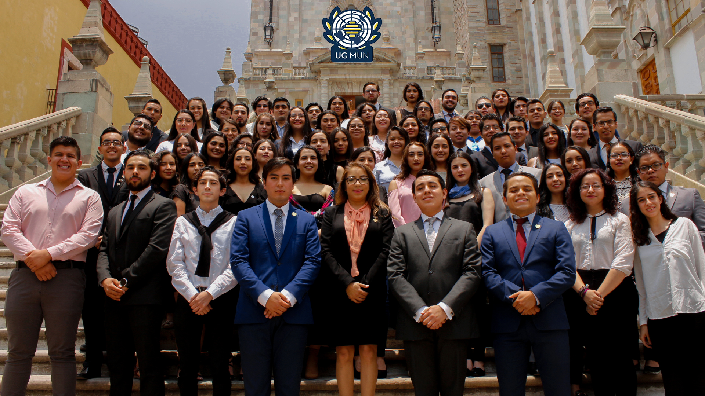

<section class="page-section about-heading">
  <div class="container">
    
    <div class="about-heading-content">
      <div class="row">
        <div class="col-xl-9 col-lg-10 mx-auto">
          <div class="bg-faded rounded p-5">
            <h2 class="section-heading mb-4">
              <!-- <span class="section-heading-upper">Strong Coffee, Strong Roots</span> -->
              <span class="section-heading-lower">CONVOCATORIA PARA PRESIDENTE DE MESA</span>
            </h2>
            <br />
            <center>
			<p class="section-heading mb-4">
				<span class="section-heading-upper">"ROMPIENDO ESQUEMAS, GENERANDO ACCIONES"</span>
			</p>
			</center>
			<p>
			Modelo de las Naciones Unidas para la Universidad de Guanajuato (UGMUN)
			</p>
			<center>
			<p class="section-heading mb-4">
				<span class="section-heading-upper">CONVOCAN</span>
			</p>
			</center>
			<p>A todos los Estudiantes de la Universidad de Guanajuato para formar parte del comité organizador UGMUN 2020, en su 4ta edición.
			</p>
			<p class="section-heading mb-4">
			<span class="section-heading-upper">Requisitos:</span>
			<ol class="section-heading-upper">
				<li>Ser Estudiante de la Universidad de Guanajuato.</li>
				<li>Estar inscrito en los periodos de Enero-Junio y Agosto-Diciembre.</li>
				<li>Enviar curriculum vitae munner y carta motivos por el cual te gustaría ser presidente de un comité</li>
			</ol>
			</p>
			<p class="section-heading mb-4">
			<span class="section-heading-upper">Periodo de registro:</span> <span style="color:tomato;font-weight:bold;">DEL 3 AL 14 DE FEBRERO DE 2020.</span>
			</p>
			<!-- <p class="section-heading mb-4">
			<span class="section-heading-upper">ÁREAS EN LAS QUE PUEDES FORMAR PARTE:</span>
			<ol>
				<li><b>Mesas (como oficial de conferencias o moderador):</b> Revisa el protocolo, dirige el debate y delimita los países en los comités y tópicos. Además de colaborar en inscripciones.</li>
				<li><b>Logística:</b> Encargados del diseño estratégico y logístico del evento, para cumplir los objetivos en tiempo y forma antes y durante el Modelo.</li>
				<li><b>Recursos Humanos:</b> Encargados de revisar la correcta realización de los planes de trabajo por área, evaluar el desempeño individual del comité organizador y planear las capacitaciones y juntas.</li>
				<li><b>Patrocinios y Tesorería:</b> Encargados de conseguir el apoyo de instituciones gubernamentales y privadas para poder cubrir todos los gastos del modelo, así como administra los recursos financieros del Modelo, buscando la mejor distribución de los mismos en las áreas del Comité.</li>
				<li><b>Órgano de Equidad:</b> Encargados del buen desenvolvimiento del evento, atendiendo quejas por algún abuso de autoridad, acoso, faltas de respeto y alguna otra problemática del comité organizador con algún delegado o entre delegados.</li>
			</ol>
			</p> -->
			<br />
			<p class="section-heading mb-4">
			<span class="section-heading-upper">Formulario de registro:</span>
			</p>
			<p>
			A continuación, se despliega el formulario de registro, para el cual te pedimos leas atentamente cada una de las preguntas. Es necesario responderlas todas y dar click en el botón de enviar respuestas al final del formulario.
			</p>
			<p>
			Es importante que hayas leído detenidamente toda la información previa antes de llenar tu registro. Una copia de tus respuestas te será enviada tu correo de registro.
			</p>
			<p>
				<span style="color:tomato;font-weight:bold;">AL COMPLETAR TU REGISTRO SE TE AGENDARA PARA UNA ENTREVISTA Y CONTINUAR EL PROCESO, RECUERDA ENVIAR TU DOCUMENTOS PUES DE NO CUMPLIR CON LOS REQUISITOS DEJARAS DE SER CANDIDATO A PRESIDENTE.</span>
			</p>
            <p>
				<iframe src="https://docs.google.com/forms/d/e/1FAIpQLSc-R-ZbAx-AHtgUAycCpk4gXMBxB6ooQClpSQzRbE6oV5YMqw/viewform?embedded=true" width="640" height="1356" frameborder="0" marginheight="0" marginwidth="0">Cargando…</iframe>
          	</p>
		  </div>
        </div>
	  </div>
    </div>
  </div>
</section>
